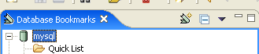
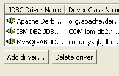
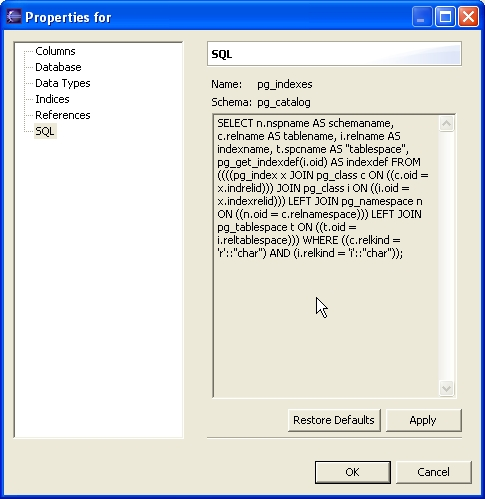
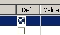
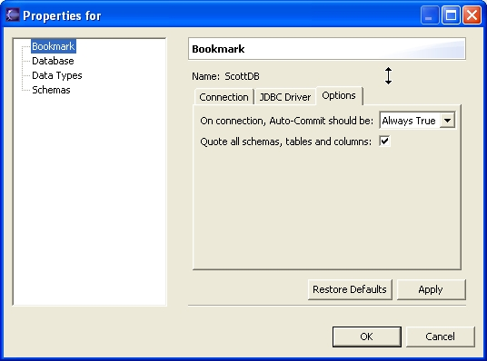

Changes Since 2.4.4
- The Other Encodings Action on the ResultSet view (a.k.a. the table view)
depended on classes only available in JDK 1.4. The action is excluded under
JDK 1.3.
- A Collapse All action has been added to the Bookmark View.

- The JDBC Driver dialog of the New Bookmark wizard now allows deleting drivers.

- Some bug fixes about the display of BLOBS and very big columns in general.
- Feature request 1100049 is implemented. It makes Quantum change the default
execution bookmark in the SQL Query View when a query is pasted there from
the Recent SQL Statements list.
- To the Properties of the Views, a new page has been added "SQL"
with the SELECT clause used to create the view (mind that it may not be exact,
as clauses like WITH CHECK OPTION can be not included, check the SQL92 standard,
and in any case, it'll depend on database, as IBM databases tend to include
the CREATE clause, for example). Some databases are not implemented yet, so
if you see a blank SQL, contact the Quantum developers with info about the
right query for your database.

- Some changes to the quoting of table names. Tables with spaces in the name
would not be quoted. Now you'll find much more quoting. If you note some problems
now with the new system, let us know.
- The Insert Wizard got a new column to select if you don't want to insert
the column, and let it with its default value. If you select the column, it
won't appear in the columns of the insert.
- Suggested by Cesar Miquel, added a new property for bookmarks, under the
Options tab. It permits you to quote all schemas, tables and columns in the
quantum generated SQL. The default is unchecked, that is, quote only the names
that have spaces, signs, mixed case or are a reserved keyword (this last only
from version 2.4.5).

- A bug relating to DB2 on a z/OS mainframe and the IBM DRDA Driver has
been resolved.
- At some point, it looks like some code was propagated that allows
"quoting" of table names. Some databases, like Oracle, support
mixed-case table names, and the only way to explicitly refer to
the mixed case table name is to put quotation marks around it. Recently,
it seems that the standard "double-click" on a table in a MySQL database
started invoking this quoting code, but MySQL doesn't appear to support
quoted table names. I've explicitly turned this off for MySQL, but there
may be some other databases for which this is a problem.
- An export facility has been added to the Result Set View (a.k.a. the
Table View). At the moment, only Excel is supported, but soon other
export formats will be added.
- Deleted the "Subset" view, as it was broken and nobody complained
so logically nobody used it. I may re-implement it sometime.